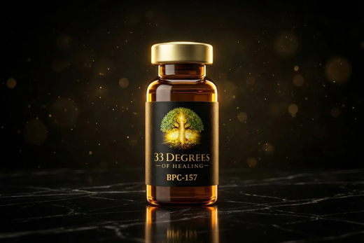

Overview
BPC-157 is a synthetic peptide based on a fragment of Body Protection Compound (BPC), a protein naturally present in human gastric fluid. It is one of the most extensively studied peptides in tissue biology research, with investigations spanning muscle, tendon, ligament, and gastrointestinal pathways.
Research Mechanisms
- Investigated for mechanisms in muscle, tendon, and ligament tissue repair pathways
- Research examines effects on gastrointestinal function and gut mucosal integrity
- Studied for vascular signaling mechanisms including nitric oxide modulation
- Often combined with TB-500 in dual-pathway regeneration research protocols
For research purposes only. Not intended for consumption, clinical application, or diagnostic use.